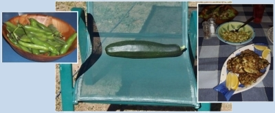

Home
News for 2009
________________________________________________
More juggling of tanks
November 24 2011
There's a whole
pagedevoted to the original moving of the old tin tanks. Now we're getting a granny-flat (relocatable) for Lesley's Aunty Kath to live in and the only decent place for it is behind the house where the tank we bought in April is. The only way to move it was to buy a new tank (which we needed) to drain the old one into so we could drag it away. The added benefit of this is we can have the old one up the back where it's high enough above the house for a gravity-fed water supply. Once the old tank was drained out I moved it onto the driveway on logs, then it was ready to drag:
I used reverse partly for its low gearing, partly for better traction with front wheel drive - and partly to see if the tank was going to smash into something. Here it is in its new position:
And yes, I was able to get the car out...
________________________________________________
New Mouse-over background!
September 1 2011
Exciting news! I was playing around with the style of the website and I hit upon the idea of having a slightly lighter shade of background image for when you hover over a link! Have a look at the difference:
________________________________________________
Back shed taking shape
30 August 2009
It's been on the back burner a long time, but noticeable progress is occurring:

It'll be divided into two halves one for storage and workshop for Steve, one for storage and studio/craft room for Lesley.
Hope everyone's well,
Steve
________________________________________________
Broadband at Last!
July 10 2009
Our Satellite dish arrived on Wednesday, courtesy of the government's Broadband Guarantee, so I'll load a few photos up.
First of all the dish:
Next here's Lesley's garden shed we got from a freebies website, sitting on floorboards we had previously got from the same site:
Also we had a neighbour it to cut down a big dead tree at the back, giving us a couple of years' firewood. Plus I pruned a couple of big plum trees so it's opened it all up nicely:

We've put in a new bed beside the vege tunnel (which is all planted out now):
We've put 6 fruit trees in the orchard:
And of course the verandah, which just needs the railings now to be complete:

I've re-built the website (not visibly, but it's coded a bit differently and the photos are on the same server as the web-pages now, and it loads a lot faster). The link at the top of the blog ("Main photo Site") has changed address, but everything behaves the same to visitors - IOW, I needn't have mentioned anything about it, hehehe...
love to everyone,
Steve
________________________________________________
Verandah nearing completion
June 13 2009
Uploads are slow, so you could go to the Verandah page on the website
here
Also. I'm now hosting the site with a really good free Australian host at
https://www.triorbit.com/
which I reccommend to anyone who wants to have a small website rather than just upload files to somewhere.
________________________________________________
Rain!
June 4 2009
Yes, it's raining excellently now, light and patchy, but very wet, the most since Christmas, with more forecast. And I hooked up the front verandah to the main big tank the other week, so it's all collecting:
Also here's the front garden - it's all Lesley's design and work, and it's looking fantastic already:
________________________________________________
All moved in
May 8 2009
We brought the rain with us - we had a week of patchy rain with a few decent falls the same week we moved, in fact we had to do a couple of loads in the rain, so the place is all bright green. A bit late in the season for any real growth to come of it though, but our new 10,200-litre tank is over half full already. You can also see that Lesley has made a start in planting out the new front garden.
We couldn't find the camera for several weeks, which is partly why it's been so long since I've put any news here. But we found it thew other day. I haven't put any full-size photos up as we're still on dial-up for the time being and the web is painfully slow.
________________________________________________
New tank, no photos :(
March 13 2009
We took heaps of pictures of our new new tank. It's 10,200 litres (around 3000 gallons, not big but we needed one less than 1800mm high) - but when we got back to Eagle Vale the whole memory card was "inaccessible". But I did get a photo of our current garden at Eagle Vale, which we are about to transfer to our trailer to move it to Rye Park in preparation for our move there. We hope to be moving within the next 2 months:
love to all.
________________________________________________
Fixed the front page of the site
October 1 2012
I discovered that the front page of the site looked awful in Internet Explorer even though it passed the web-standards-compliance validation by %100. The only browser I use is Firefox. So I re-coded it slightly and now it looks as it should:
________________________________________________
A productive Xmas Break
January 5 2009
It's been a while since adding anything to the blog, but we've still been pottering around. Especially during the week we spent there between Xmas and Jan 4. The main achievement was to demolish the floor of the front verandah and put in new posts: The new page for the verandah on the photo site is
here.
We also harvested a very large zucchini, a whole lot of broad beans, and Lesley made the yummiest meal we've ever had - zucchini fritters, salad with potatoes, and beans:

Something we did a couple of months ago but didn't put here was a new gateway from the house to the vegie garden, which makes it a pleasure to go to the garden without having to straddle the fence:
________________________________________________
Home
House
October 2013
Asbestos
Verandah
Tanks
Fort Veg
Orchard
Pacas